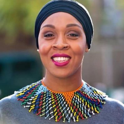
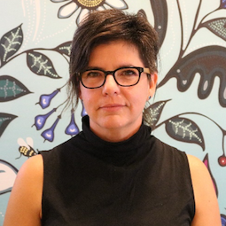
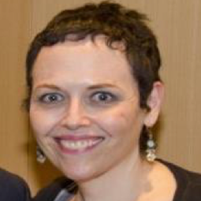
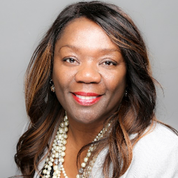
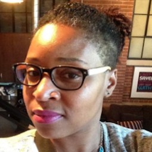
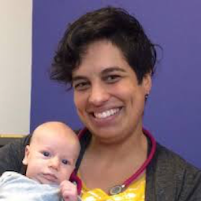
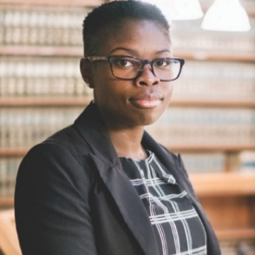
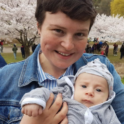
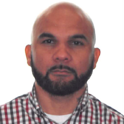

Fatimah Jackson Best - PhD
Dr. Jackson-Best completed her PhD in Public Health Science at the University of Toronto, Dalla Lana School of Public Health in 2015. Her dissertation was on maternal depression in Barbados. Following this she did a Global Health postdoctoral fellowship at the University of Ottawa. She recently worked with the Trinidadian NGO I Am One to pilot ‘Your Story’, a study exploring the lived experiences, social supports, and healthcare needs of LGBTQ people in the Caribbean. Currently she is the Project Manager for Pathways to Care, and is designing a mental health intervention for Black children, youth, and their families in Ontario.

Dr. Roberta Timothy - PhD
Dr. Timothy is currently the co-Director of Continuing Healing Consultants and teaches Human Rights, Health Ethics, and Global Health at York University. As a researcher, trainer, group facilitator, therapist, community organizer, professor, and clinical supervisor in community, educational, and private practice settings, she utilizes anti-oppression approaches. Her interests include the practice, research, and knowledge translation of Anti-Oppression Psychotherapy, critical expressive arts therapy, inclusive qualitative research, trauma and transgenerational violence; work culture and organizational change, Anti- Oppression/colonial political economy, Resistance Education, and Creative Resistance. Dr. Timothy holds two Master’s in Political Sciences and Counselling Psychology, a Doctorate in Adult Education, Community Development, and Gender Studies, and a SSHRC postdoctoral fellowship.

Rania El Mugammar
Rania is a published writer and experienced anti-oppression, equity, inclusion and anti-oppression educator and consultant who is unflinchingly committed to decolonization and liberation as the ultimate goals of her work. She is currently the chair of the Board of Outburst at the Barbara Schlifer Clinic, a member of the St. Jamestown Collective Impact Steering Committee, a member of the Leaders Panel for the Economic Development and Culture Strategic Plan at the city of Toronto, and the lead equity consultant for the Radical Imaging Institute and co-founder of the How to be an Ally Series at the Centre for Social Innovation.

Shani Robertson - MPH CHES
Shani is a consultant, researcher, program evaluator and health education specialist. Since 2006, she has had extensive involvement in HIV/AIDS research and the sexual health education of youth and marginalized groups. She has also worked with local and international organizations on issues of reproductive health, breast & cervical cancer, LGBTQ+ inclusion, mental health advocacy, child welfare, and health care for the uninsured. She earned her Honours BSc in Human Biology from the University of Toronto and her Master’s in Public Health degree from Emory University. Currently, she is in her senior year of the Midwifery Program at Ryerson University.

Sara Wolfe - RM
Sara Wolfe is an Indigenous Registered Midwife and a founding partner of Seventh Generation Midwives Toronto. Some of her work experience includes co-leading the development of the Toronto Birth Centre, working as a Community Research Associate with the Well Living House Research Centre at St. Michael’s Hospital and working as an outpost nurse for several years in remote Northern First Nation Communities. She has an MBA from the Rotman School of Management at the University of Toronto. Her research has focused mainly on Indigenous midwifery and urban Indigenous population health.

Beverly Guttman - MSW RSW
Beverly Guttman is a Senior Program Manager at the Provincial Council for Maternal and Child Health with over 30 years of clinical and administrative experience in the maternal/child health sector. At PCMCH since 2000, her work involves collaborating with, and providing leadership to, clinical/administrative teams, community partners and provincial expert panels in the development, implementation and evaluation of initiatives related to the enhancement of maternal/child health care in the province. Her current responsibilities lie with the Prenatal Screening portfolio and on an initiative related to the readiness of Emergency Departments across the province to care for paediatric patients, aged 0-18, who present to an ED.

Jennifer Dockery - MHA
Jennifer is currently the Director of Primary Care, Health Equity and Community Engagement at Women’s College Hospital. A Registered Nurse with a Bachelor’s degree from Ryerson University, she also holds a Master’s in Health Administration from the University of Toronto. With more than 20 years’ experience of progressive leadership and high-quality program development, Jennifer has built a career with a focus on advocating for women and children’s health. She established Ontario’s first hospital-based refugee clinic at Women’s College Hospital and partnered with an Indigenous midwifery practice on the development of a proposal to open the province’s first Birthing Centre, named the Toronto Birth Centre, which opened in 2014.

Trish Langley-Frempong
Trish is a third-year student in the Midwifery Education Program (MEP) at Ryerson University, is a member of the MEP Management Committee and the student representative on the Board of Directors for the Canadian Association of Midwives. Her previous education experiences include an undergraduate degree in Sociology, as well as a post-graduate diploma in Psychotherapy. She was also a yoga instructor for Modo Yoga (North York, Thornhill, Pickering and Windsor). Trish is inspired by the work of midwifery, both nationally and internationally, that supports all pregnant people to have empowering experiences of pregnancy, labour and birth.

Sarah Martineau - RM
Sarah is a registered midwife of Trinidadian and First Nations descent who practices at the Midwives Collective of Toronto. Prior to studying midwifery, she achieved an undergraduate degree from the University of Toronto in Physical Health and Education and a Paramedic Diploma from Centennial College. She chose to pursue midwifery in order to establish closer connections to families as well as provide more individualized care to meet differing needs, and as a recipient of excellent midwifery care for her own two children, she knew that midwifery would be a perfect fit for her and her family.

Manavi Handa - RM MA
Manavi is a graduate of Ryerson University’s Midwifery Education Program (MEP). She earned her Master of Health Sciences in Bioethics from the University of Toronto in 2006. She is now an Associate Professor in Ryerson’s MEP program. Manavi’s key area of research focuses on the health access and outcomes for pregnant women with precarious immigration status. Manavi is part of a network of midwives who regularly volunteer their services in collaboration with a community health centre, to offer midwifery care to uninsured pregnant women.

Dr. Nazilla Khanlou - RN PhD
Dr. Khanlou is an Associate Professor at the School of Nursing, York University and holds the Women's Health Research Chair in Mental Health at the Faculty of Health. Her clinical background is in psychiatric nursing. She applies intersectionality-informed frameworks, using diverse research methods, in community-based research and has numerous publications. Over the past ten years she has organized over 25 KT events related to women’s health and mental wellbeing, 4 Learning Institutes in Maternal-Child Health, and 1 student health conference. She also founded the International Network on Youth Integration; an international network for knowledge exchange and collaboration on youth.

Dr. Ullanda Niel - MD CCFP
Dr. Niel is a family physician and obtained a fellowship in the care of adults with developmental disabilities from Queen's University. She has initiated special clinics for persons with Intellectual and/or Developmental Disabilities (I/DD) in her family practice at the Scarborough Centre for Healthy Communities and works at an elementary school clinic in partnership with the local school board. She is also involved in the development of primary care clinical practice guidelines for the care of adults with I/DD. She is currently developing resources to help people with I/DD, and their families and health care providers manage the transition from youth to adult health care services.

Renatta Austin - JD
Renatta is a dynamic trial and appeal lawyer, and the founder and owner of the Eglinton West Law Office. She holds a Bachelor‘s degree in Criminology and Political Science from the University of Toronto, a law degree from the University of Toronto, Faculty of Law, and a Master's degree from the University of Western Ontario. Renatta has also completed specialized training in trial and appellate advocacy through Osgoode Hall Law School and the Advocates' Society. She is also a Director of the Women’s Health in Women’s Health Community Health Centre.

Kate Macdonald
Kate Macdonald is a patient advocate and complaint doula based in Toronto. After personally experiencing obstetric violence and Postpartum PTSD, Kate started The Reproductive Justice Story Project; a patient advocacy initiative to expose mistreatment and abuse in reproductive healthcare. The project includes an online platform for those who wish to share their own stories and resources to help others speak up. Kate is grateful for the invitation to share this project at the conference.

Solana Cain - PHJN
Solana is a freelance Photojournalist and facilitator, as well as a contributor at Shedoesthecity.com, which is an online space for women. She is a visual storyteller based in Toronto and every day, is fascinated with the vast array of different people living in one space. She desperately tries to capture this diversity in her photos. Solana holds a Bachelor of Journalism from Ryerson University and is a graduate of the Photojournalism Program at Loyalist College.

Stacia Stewart
Stacia Stewart is the Program Coordinator for the 5Ps perinatal program at Parkdale Queen West Community Health Centre and has supported the 5Ps program for over 10 years. The 5Ps program is a large multi-service perinatal and parenting support program for multi-stressed families with children aged 0-6 years. 5Ps core programs see approximately 350 families and an average of 200 infants born each year. Stacia is also a labour and postpartum doula and provides doula services to new families, with a particular passion for LGBTQ families, adoption and birth and disability.

Kike Ojo - MA BEd
Kike Ojo is a recognized community leader for the elimination of racial discrimination in Canada and is currently the Project Manager for One Vision One Voice, a project whose goal is to change the Child Welfare System for African Canadians by implementing the 11 Race Equity Practices outlined in the One Vision One Voice Practice Framework, at all Children’s Aid Societies. Prior to joining the OACAS, Kike was the Senior Manager of Diversity and Anti-Oppression for 9 years at Peel Children’s Aid Society, which received the Maytree Foundation’s Diversity in Governance Award in 2010.

John Telfer
John is a Child Protection Worker with the Children’s Aid Society of Toronto (CAST). He holds a BA in Social Work from the University of East London and a Post Graduate Diploma in Child and Family Studies from Kingston University. John has worked in child welfare for the past 10 years and obtained a Master of Social Work from the University of Windsor. He is passionate about his work, which led him to obtain a Certificate in Narrative Therapy and co-facilitate the Caring Dads Program, as well as the Kinship Support Group: When a Loved One Struggles with Mental Health.